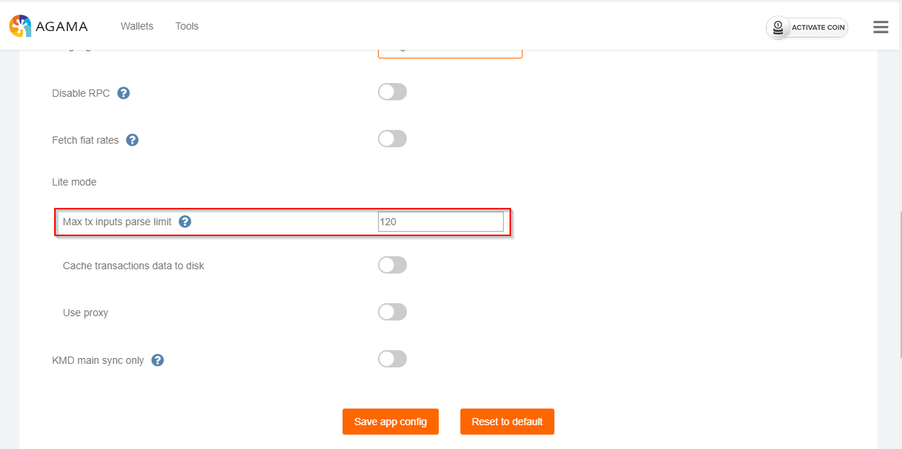
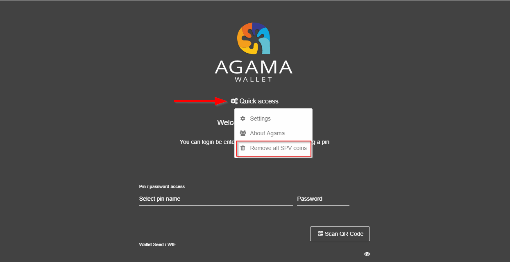
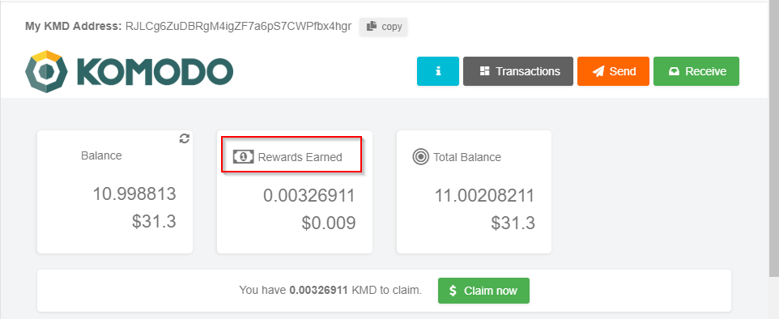
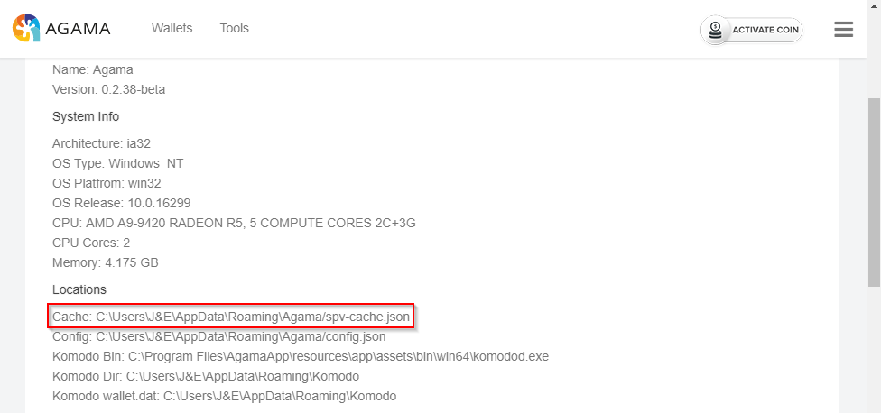
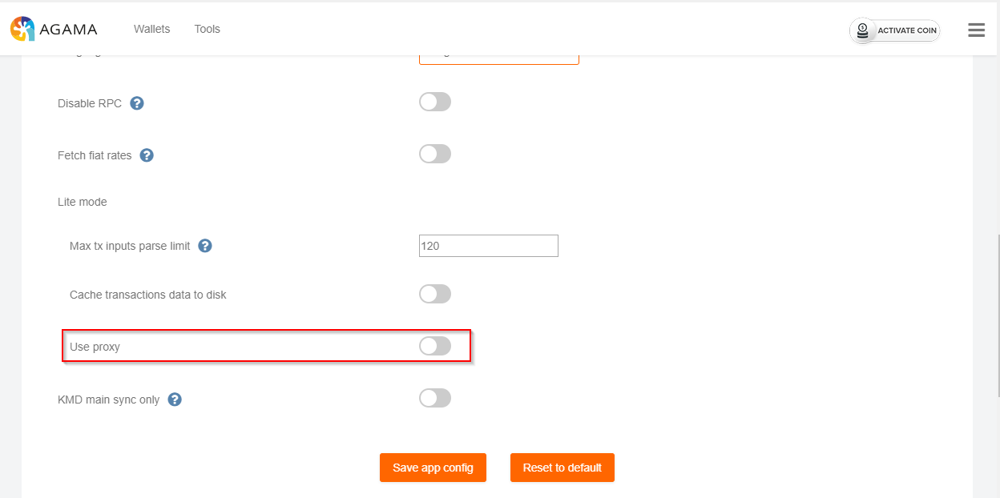
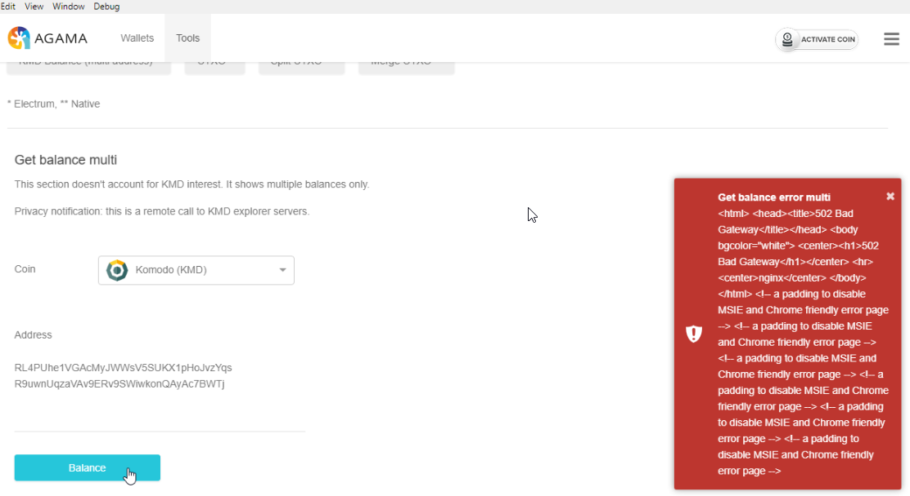
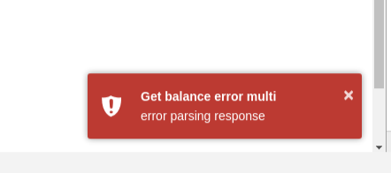

Agama-v0.2.38-Updates
- Spv max vin parse settings has been added.
- SPV parse settings may be found in Settings -> App Config

- Login quick menu click outside fix, Added an option to
Remove all SPV Coins
- Open Agama then select a coin from the SPV dropdown
- With the login screen displayed select the Quick Access link then select the new option
Remove all SPV Coins

- Update glxt seed node ip - Dev only
- Partial responsive layout support
- Added kv explorer link
- The KV explorer link has been added and is the following: http://kv.explorer.supernet.org
- Rename placeholders interest -> rewards, new interest rules past height > 1m
- References to “interest” are now replaced by “rewards”

- Spv detect clock diff - Dev only
- Spv local cache
- Spv-cache.json is now stored locally

- Spv proxy
- The SPV Proxy option is enabled in Setting -> App Config

- agt-186, tools multi balance proper fallback/error handling
- Old message when KMD explorer is down

- New message when KMD explorer is down
